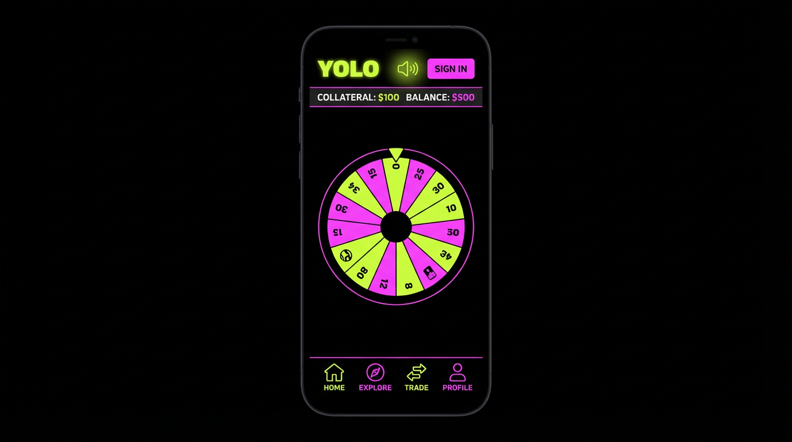
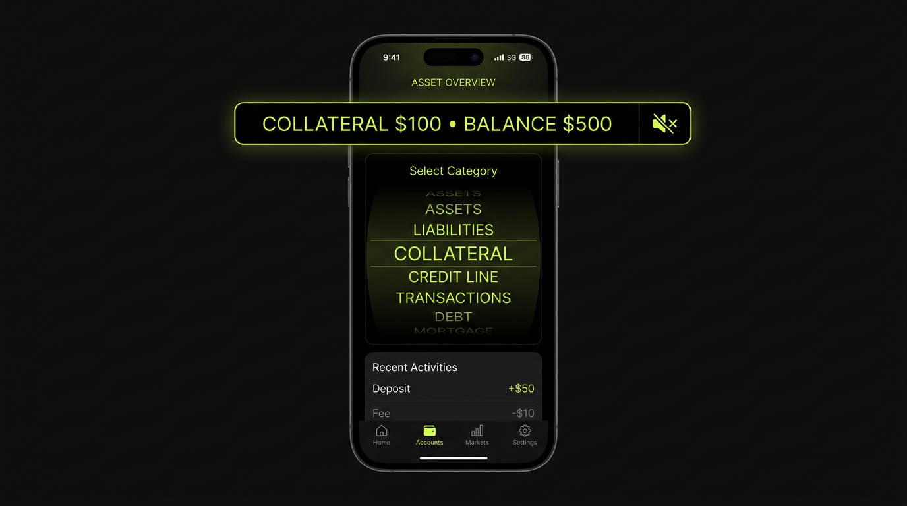
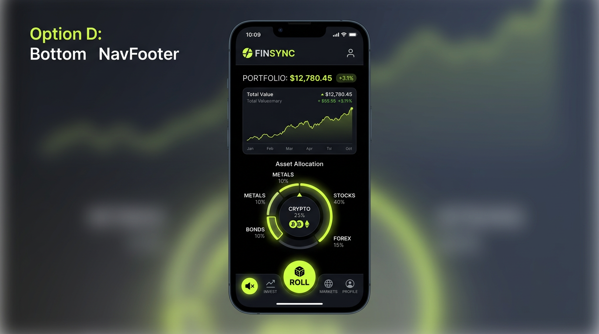
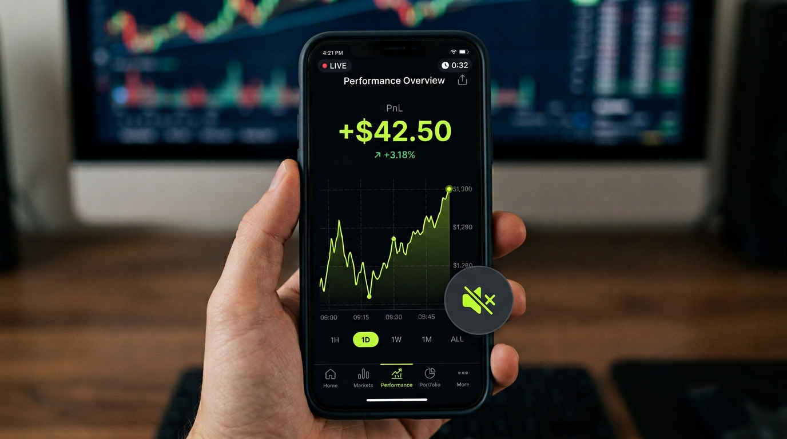

Mockups showing different ways to add a quick-access music toggle across the YOLO app. Currently music is controlled only in Settings.

Icon between YOLO logo and Sign In. Always visible on picker/wheel screens. Hidden on PnL (header hidden).
Floating pill/circle above content. Stays visible even when header is hidden (PnL). Like iOS control center.

Inline at right end of COLLATERAL | BALANCE bar. Minimal, always on screen when bar is shown.

Next to ROLL button in bottom nav. Thumb-friendly. Consistent placement across stages.

Floating in chart area when header is hidden. Ensures music control on PnL view.